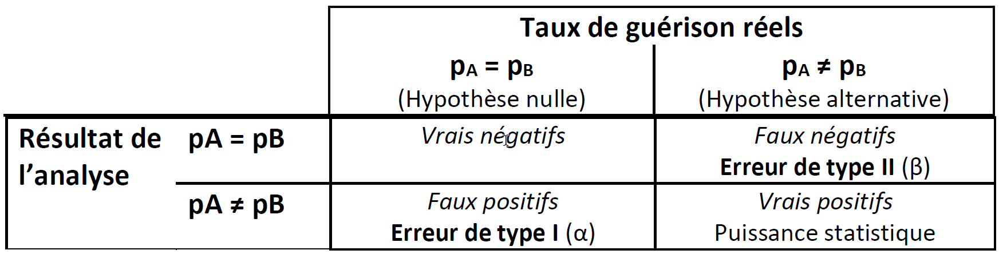

22 Usages et mésusages des statistiques
Toutes les études scientifiques contiennent une ou plusieurs analyses statistiques des données. Ces analyses semblent souvent compliquées pour les non-spécialistes, ce qui rend difficile l’évaluation de leur pertinence, avec le risque de passer vite dessus (les fake news relatives au COVID-19 en sont une bonne preuve).
Dans les études évaluant l’efficacité préventive ou curative d’une pratique ou d’un traitement sur une maladie, on cherche à identifier l’effet causal de ce qui est évalué sur la maladie. Or, les analyses statistiques mesurent des associations, sans préjuger de la causalité. Un premier élément de mise en garde concerne donc l’interprétation qui est faite des analyses statistiques. Le fait que des phénomènes soient associés n’implique pas forcément que l’un soit la cause directe de l’autre, ni le sens dans lequel s’exerce la causalité lorsqu’elle est présente. Au-delà de la significativité statistique, la plausibilité des résultats doit toujours être considérée . Les analyses statistiques reposent pour la plupart sur un nombre restreint de principes qu’il convient de connaître.
L’approche la plus communément suivie est de faire l’hypothèse que le traitement évalué n’a pas d’effet sur la maladie, ou que les différents traitements évalués ont une même probabilité de causer la guérison. On parle d’hypothèse nulle. Cette hypothèse nulle est traduite en distribution statistique. Par exemple, suite à un traitement curatif, on peut avoir une guérison (succès) ou une non guérison (échec). La distribution statistique utilisée est donc la distribution binomiale qui a pour paramètre \(p\), ici la probabilité de guérison. L’hypothèse nulle consiste à considérer que cette probabilité de guérison est la même pour les différents traitements. Lorsque l’un des traitements est un placébo, cela revient à évaluer si l’autre traitement a la moindre efficacité curative. Les tests statistiques évaluent donc la probabilité de mesurer la différence de taux de guérison observées dans les données si les 2 traitements avaient le même taux de guérison. Cette probabilité est ce qu’on appelle la valeur de p ou p-value en anglais. Notez qu’il s’agit d’une probabilité, non-nulle, de conclure à une différence d’efficacité entre traitements s’il n’y avait pas de différence entre ces traitements. Cela implique qu’il y a une certaine probabilité d’aboutir à une conclusion erronée, dans ce cas une probabilité d’un résultat faussement positif. On parle alors d’erreur de type I. Le seuil retenu pour conclure à une différence est appelé α. Si on retient 5% comme c’est souvent le cas, cela implique qu’en l’absence de différence entre traitements, on va conclure de manière erronée à l’existence d’une différence dans 5% des cas. Une conséquence d’importance pratique est que lorsqu’on a beaucoup de données, on peut tester de nombreuses associations avec des tests statistiques : sur 100 associations testées, 5 seront statistiquement significatives par chance, c’est-à-dire sans qu’il y ait de réelles relations entre les variables. Ce phénomène est connu sous le nom de problème des comparaisons multiples (Bennett, Miller, and Wolford 2009).
Plus on diminue la valeur de α, c’est-à-dire plus on est strict sur le seuil pour conclure à l’existence d’une différence significative entre les 2 traitements, plus la probabilité de conclure à une absence de différence lorsque cette différence existe augmente. On parle dans ce cas d’erreur de type II. Pour estimer la probabilité d’une erreur de type II, il faut poser l’hypothèse alternative. Dans l’exemple développé ici, il faudrait faire une hypothèse sur le taux de guérison attendu lors de l’utilisation du traitement évalué. La capacité à détecter un effet lorsqu’il existe est appelée puissance statistique. La puissance augmente avec l’importance de l’effet mesuré (différence importante entre les taux de guérison entre les 2 traitements) et avec la taille de l’échantillon. Le tableau ci-dessous résume ces notions.

Le lecteur formé à l’épidémiologie aura remarqué que :
- α = 1 - spécificité
- β = 1 - sensibilité
Dans ce cas, la proportion d’hypothèses alternatives vraies parmi tous les résultats statistiquement significatifs est équivalente à une valeur prédictive positive. Plus la fréquence des cas où l’hypothèse nulle est vraie dans les hypothèses testées, plus cette valeur prédictive positive diminue, c’est-à-dire qu’on augmente la proportion de faux positifs (Ioannidis 2005).
En résumé de cette partie, les analyses statistiques utilisées dans les articles scientifiques peuvent parfois sembler compliquées. Quelques principes de base peuvent permettre de détecter bon nombre d’erreurs :
- les analyses statistiques mesurent des associations, pas la causalité. Au-delà de la significativité statistique, la plausibilité des résultats doit toujours être évaluée,
- les tests statistiques reposent sur l’évaluation de la probabilité d’observer les données sous des hypothèses de hasard et d’absence de différence entre traitements comparés. Plus on augmente le nombre de variables comparées et d’analyses, plus on augmente le risque d’obtenir des résultats faussement positifs.